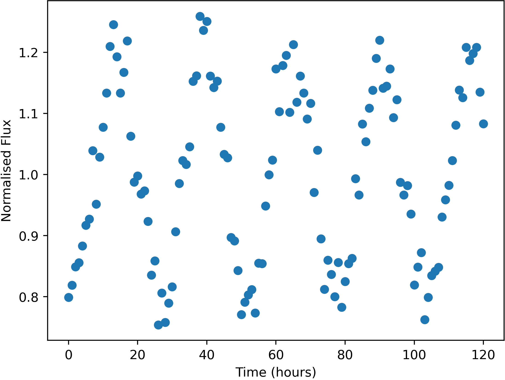

Some stars in the sky were found to change in apparent brightness over time, usually following a periodic trend.

Example of a variable star lightcurve - star FrontS133423
Units of the variable data are:
Uncertainties in this data (one standard deviation) are:
Here is a list of the flashes detected, with their approx. positions and number of photons detected. Positions are given by where they would appear in the relevant wide-field camera image. Positions are only accurate to 0.05 degrees (one standard deviation).
The X-Ray camera is sensitive to burts of more than 174 photons only.
| Name | Direction | X | Y | Photon-Count |
|---|---|---|---|---|
| FE01 | Right | 0.88 | 6.03 | 5016892 |
| FE02 | Left | 7.55 | -39.36 | 97171 |
| FE03 | Top | 30.47 | -15.98 | 4138 |
| FE04 | Right | -39.44 | 27.21 | 2291 |
| FE05 | Top | 0.37 | -5.06 | 1369 |
| FE06 | Bottom | 9.06 | 16.22 | 489 |
| FE07 | Front | -8.73 | -28.50 | 725 |
| FE08 | Right | 19.55 | -36.67 | 520 |
| FE09 | Front | 23.64 | 33.03 | 1286 |
| FE10 | Right | 6.27 | -11.83 | 1265 |
| FE11 | Front | 25.11 | -14.06 | 630 |
| FE12 | Back | 26.58 | -1.57 | 862 |
| FE13 | Right | 5.01 | -2.78 | 2493 |
| FE14 | Back | -5.26 | -5.64 | 382 |
| FE15 | Front | -27.59 | 15.00 | 75121 |
| FE16 | Back | 17.75 | 30.08 | 1426 |
| FE17 | Right | 21.51 | -15.62 | 20267801 |
| FE18 | Front | 25.08 | -14.06 | 664 |
| FE19 | Back | -10.16 | 2.41 | 382 |
| FE20 | Right | 37.11 | -28.74 | 356 |
| FE21 | Left | -2.64 | 21.91 | 571 |
| FE22 | Right | -39.46 | 27.26 | 2286 |
| FE23 | Front | 12.73 | 9.52 | 13726 |
| FE24 | Left | 0.26 | 27.27 | 173280 |
| FE25 | Back | -4.08 | -0.27 | 360 |
| FE26 | Top | 12.36 | -27.76 | 562 |
| FE27 | Top | -2.35 | -43.69 | 1365 |
| FE28 | Right | 7.31 | -38.30 | 564 |
| FE29 | Left | 40.35 | -23.58 | 775 |
| FE30 | Left | 37.73 | -27.04 | 440 |
| FE31 | Right | 19.23 | -32.90 | 378 |
| FE32 | Bottom | 36.86 | 0.51 | 315 |
| FE33 | Left | 37.74 | -27.01 | 458 |
| FE34 | Back | -3.91 | -11.21 | 820 |
| FE35 | Front | 7.77 | -15.14 | 543 |
| FE36 | Left | -17.63 | -6.53 | 438 |
| FE37 | Top | 12.49 | -27.43 | 601 |
| FE38 | Right | 18.84 | 15.72 | 673 |
| FE39 | Right | 8.46 | 24.96 | 663 |
| FE40 | Front | -22.69 | 39.33 | 347 |
| FE41 | Bottom | 31.16 | -22.56 | 98946 |
| FE42 | Top | -12.10 | -35.20 | 1127 |
| FE43 | Back | 6.40 | 7.58 | 536 |
| FE44 | Bottom | -14.44 | -4.34 | 285 |
| FE45 | Right | -37.82 | 39.11 | 485 |
| FE46 | Back | -1.88 | -20.34 | 442 |
| FE47 | Right | 7.11 | -38.47 | 530 |
| FE48 | Right | 4.97 | -2.57 | 2464 |
| FE49 | Back | -10.12 | 21.39 | 1271 |
| FE50 | Bottom | -15.55 | 1.21 | 625 |
| FE51 | Back | -3.81 | -11.15 | 838 |
| FE52 | Back | 6.53 | 7.60 | 554 |
| FE53 | Left | 7.86 | -39.10 | 92339 |
| FE54 | Right | 6.45 | -3.87 | 4763828 |
| FE55 | Left | 34.48 | 16.51 | 2624 |